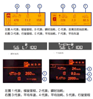
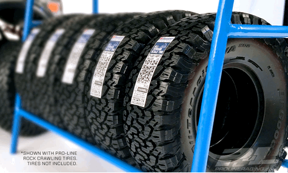
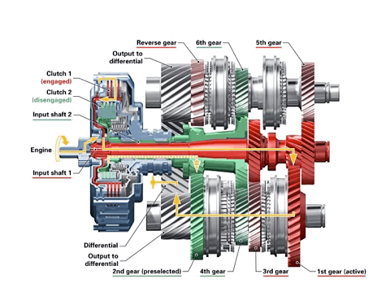
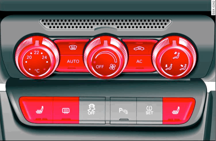
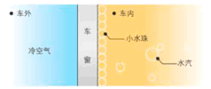
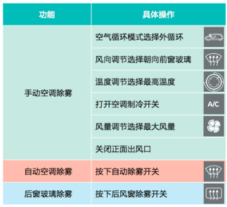
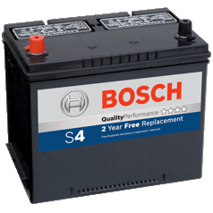

上海市机动车维修公共服务平台
爱车小贴士
新车磨合注意事项
在最初的 1500 公里里程内：
1)
起步和驾驶操作要轻柔，尽量避免急加油
2) 发动机转速不超过 4000 转 / 分钟
3) 不要高速行驶太长时间
4) 尽量避免急刹车
5) 不要牵引其它车辆
• 节油驾驶
•
不同配置的车辆“燃油消耗”显示的位置不一样:有的显示在多功能显示屏上;
有的显示在
组合仪表中央显示屏上。
• “瞬时油耗”表示最近几秒的燃油消耗信息，只有在 车速高于 30 公里 / 小时时显示。您会发现车辆行驶过程中 该数值总是不停地变化:急加速时瞬时油耗上升明显，松 开油门减速时瞬时油耗下降很快。“瞬时油耗”不代表车 辆真实油耗水平。
• “平均油耗”是指最近一次行驶里程清零后，重新计 算累计里程内平均燃油消耗信息。如果您最近经常高速行 驶，那么平均油耗值较低;如果您最近一直在拥堵的市区 行驶，平均车速低，那么平均油耗值较高。
优化驾驶习惯
• 出行之前考虑好行车路线，尽量避开车辆拥挤的地区， 经常短途低速行驶油耗可能会翻倍;
• 起步时踩油门踏板的动作要轻柔，切忌急踩油门踏板;
• 行驶时根据速度选择合适的挡位，不要低挡高速行驶， 也不要高挡低速行驶。在遵守交通规则的前提下，尽量按 照经济车速匀速行驶(60
公里 / 小时至 80 公里 / 小时)， 可以利用定速巡航(若配备)保持匀速;
• 高速行驶时关闭车窗可以减少空气阻力，同时保持安全 车距，避免不必要的制动，切忌停车时猛踩制动踏板;
• 车辆长时间停止时，应将车辆熄火。
减轻车辆负荷
1)
尽量不要在车上放置无用的物品，这些物品的重量会增 加无谓的燃油消耗;
2)
车顶行李架在使用完毕后，最好及时拆除。车载每增加 100 公斤，油耗将上升
5% 左右。
上海市机动车维修公共服务平台友情提示您 ：遵守保养规程
1)
新车磨合期间，油耗会偏高，里程达到 3000 公里后，
才会达到最佳的平均油耗;
2) 按驾驶员进门侧的轮胎胎压标签额定值，每月检查一次 冷态胎压，不要遗漏备胎，尤其是在季节更替或负载较大 的时候更要及时检查，胎压如小于标准胎压 10%，将增加 5% 左右轮胎磨损，同时增加 2% 左右的燃油消耗;
3)
在多尘的天气或地区要缩短空气滤清器清洁保养周期， 否则将无法提供足够的新鲜空气，致使燃烧不充分油耗增 加;
4)
定期使用原厂燃油添加剂可以帮助节油。请遵照保养手 册的规定，利用保养指示器(若配备)查看距下次保养的
里程或时间，定期保养您的爱车。如果未按规定定期去 4S 店进行保养，会增加 25% 左右的燃油消耗。
合理使用电器
1)
汽车空调工作动力来自于燃油消耗，不正确使用空调(如 空调运行时一直开窗)油耗会上升 25% 左右。建议使用空
调自动模式(若配备)，它可以根据您选择的舒适度值， 自动调节并优化空调所有功能。
2) 在视野光线充足的情况下及时关闭车灯，合理使用除雾、 霜开关及座椅加热开关，离开车辆前将随身携带的移动设 备断开，节约电能可以减少燃油消耗。
轮胎安全
换胎: 上海市机动车维修公共服务平台提示 更换轮胎请到有资质的商家处，杜绝翻新胎
1)
更换轮胎时，不要在同一车轴上使用品牌不同、型号不同、 花纹不同、新旧程度差异大的轮胎(临时应急使用备胎的
情况除外)。
2)
更换轮胎后，必须对车轮进行动平衡的检验和校正，否 则会引起车辆高速行驶时剧烈抖动，造成轮胎不正常磨损。
3) 使用备用轮胎行驶时，车速不大于 80 公里 / 小时。备用 轮胎只用于备用，不应长期作为行驶轮胎使用。
胎噪:
胎噪是车辆在高速行驶时轮胎与路面磨擦所产生的，路况 和车况决定胎噪大小，路况越差胎噪越大。另外柏油路面 与混凝土路面所产生的胎噪有很大区别。
胎噪产生的原因:
●轮胎花纹间隙中空气流动和轮胎四周空气扰动形成的空 气噪音。
●胎体和花纹震动引起轮胎震动形成噪音，特别是一些轮 胎的材质偏硬，容易让车主感受到胎噪。
●路面不平造成的路面噪音，特别是行驶在坑洼的路面时， 胎面与地面的磨擦冲击产生噪音，并与挡泥板、翼子板等 部件的震动形成共鸣放大后传入车内。在不平路面上行驶 时噪音会增大，在水泥路面上行驶比在沥青路面上噪音大， 粗糙路面比细腻路面噪音大，同时开窗行驶时候听到的噪 音会更大一些，这些都是无法避免的。
胎噪过大应检查轮胎胎面(是否夹石子)，轮胎气压是否 正常，底盘是否有异常等。
变速器使用常识
只有当变速杆处于 P 挡或 N 挡时才能启动发动机
1) 挂入 R 挡、P 挡的要点车辆必须停稳，避免车辆溜动。
2)
2)
移出 P 挡的要点
只有踩下制动踏板后才能将变速杆移出，否则会损坏变速器。
如果临时停车挂入 P 挡，踩下制动踏板超过
1 分钟，需要 先松开制动踏板，然后再次踩下制动踏板才能将变速杆从 P 挡移出。
3)
挂入
N 挡的要点
驾驶员不离开车辆短暂停车时，可以使用该挡位。车辆前 行时严禁使用 N 挡(空挡)滑行。
4)
使用 D 挡的要点
在该挡位上，自动变速器根据车辆行驶情况自动选择合适 的时机换挡，以保证燃油经济性和换挡顺畅性。在自动变 速模式下，可缓慢平稳地踩下或松开油门踏板，以获得更 好换挡平顺性。
5)长时间等红灯时，请将挡位换至
N 挡拉起手刹，可以 节省燃油并保护变速器。
空调使用与维护
对于空调使用中，车辆空调压缩机通常都是通过发动 机附件皮带驱动的，压缩机的运行必然会消耗发动机的一 小部分动力。因此，当您开空调后，您会感觉发动机不像 没开空调时那么“有劲儿”，这是所有汽车发动机在开启
空调后的正常表现。
快速去除挡风玻璃和角窗上的水雾
1)
温差大、湿度大是形成雾气的两个主要原因，所以在寒 冷或阴雨天气，车窗容易起雾;
2) 当车内空气温度高于车窗玻璃表面温度时，车内空气中 的水蒸气遇温度较低的玻璃后会凝结形成雾。雾气的生成 是一种正常的自然现象。
为避免影响驾驶视线，一旦挡风玻璃和角窗上起雾， 请按以下方法快速除雾:
最佳的制冷效果操作方法
1)
炎热夏季，尤其是车辆被烈日暴晒过后，车内温度非常 高。建议您进入车辆后先开窗，使内外产生对流，让车内 热气散出去;同时开启空调，启用外循环，保持出风口向上， 适当时候(开窗约
5 分钟之后)再关闭车窗，切换成内循环;
2)
为发挥空调的最佳效果，可根据冷空气下沉、热空气上 升的原理，在制冷时将出风口向上，使用暖风时将出风口 向下。也可根据个人习惯，合理选择头部送风、脚部送风 等出风模式;
3)
建议您每次熄火之前，请先关闭 A/C 开关(即关闭空调
压缩机)，不要关闭鼓风机(让鼓风机运转 3-5 分钟，等 蒸发器周围水汽被吹干后，再关闭鼓风机)，这样也可以
减少空调异味的产生;
4)
选择原厂防爆隔热膜，在夏季高温天气中可以最大限度 的减小室外温度对车内温度的影响，使空调在最短时间内 达到理想的制冷效果。
蓄电池的使用和维护注 意事项
上海机动车维修公众平台提示您 ：蓄电池作为汽车的重要部件，其日常养护至关重要。
1)
一般情况下，汽车蓄电池在使用 2 年左右就应该更换。
如果车辆在恶劣的条件下使用(比如:短距离、高频率用车)， 更换周期需提前;
2)
平时多留意自己的爱车发出的“求救信号”。蓄电池电
力不足的表现主要有:一是起动机不转或转动微弱，以致
发动机无法启动;二是前大灯比平时暗;三是喇叭音量小 甚至不响; 
3)
蓄电池中的电解液在低温下的活跃程度较高温环境下弱， 同时电阻较高，所以低温下的储电能力也就相对较差。也 就是说相同的充电时间，在低温状态下要比在高温状态下充入的电能少，这也是为什么我们在冬季比较难以启动汽 车的原因;
4) 要避免在发动机熄火的情况下长时间开灯或听广播等使 用电器设备的行为。即使发动机正在运转，如果停车时间 较长，也应该把不必要使用的电器设备 ( 车内外灯类和音响、 导航等 ) 的电源关掉。